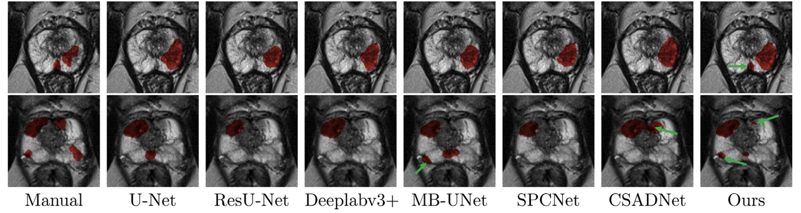

Image Analysis & Tools
Overview
This section highlights a range of projects aimed at developing tools to assist radiologists in interpreting medical images more accurately, efficiently, and consistently. These tools address diverse clinical challenges—from assessing vascular invasion in pancreatic adenocarcinoma to segmenting tumors across multiple organs—and span a variety of techniques, including segmentation networks, adversarial learning, and interactive frameworks. While anatomically and technically diverse, the common goal is to reduce inter-reader variability, automate labor-intensive tasks, and generate high-quality data for research and clinical use.
These projects also helped deepen my interest in image analysis and machine learning, and laid the foundation for my ongoing efforts to build radiologist-facing software tools. Future spin-offs from my abbreviated Primovist trial, including lesion detection, segmentation, and classification tools, will also be added here as they are developed.
Publications
-
Boundary-aware semantic clustering network for segmentation of prostate zones from T2-weighted MRI
Phys Med Biol, 2024
Developed a boundary-aware network (BASC-Net) that improves segmentation of the peripheral and central gland zones in prostate MRI by focusing on features near tissue boundaries. BASC-Net outperformed nine state-of-the-art methods across multiple datasets.
Clinical relevance: Enables more accurate lesion localization and may improve targeted biopsy planning by clearly delineating zonal anatomy.
-
Interactive cascaded network for prostate cancer segmentation from multimodality MRI with automated quality assessment
Bioengineering, 2024
Proposed a hybrid segmentation pipeline combining automated deep learning with selective user input via the Segment Anything Model. The method reduced manual annotation burden by 50% while preserving segmentation accuracy.
Clinical relevance: Offers a scalable, time-efficient approach to high-quality lesion segmentation for image-guided biopsy or treatment.
-
Prostate cancer segmentation from MRI by a multistream fusion encoder
Med Phys, 2023
Developed a multistream encoder that fuses features from T2-weighted and diffusion-weighted MRI at multiple scales. A patch-based loss function improved performance on small lesions, and the model outperformed several existing methods across 900+ cases.
Clinical relevance: Improves segmentation of subtle or small prostate lesions, supporting accurate focal therapy or biopsy targeting.
-
United adversarial learning for liver tumor segmentation and detection of multi-modality non-contrast MRI
Med Image Anal, 2021
Proposed a multitask adversarial network that detects and segments hemangiomas and hepatocellular carcinoma using only non-contrast MRI (Figure 1). The model achieved high Dice scores and accuracy without requiring contrast-enhanced imaging.
Clinical relevance: Offers a non-contrast alternative for liver tumor screening or triage in patients where contrast is contraindicated or unavailable.
-
MB-FSGAN: Joint segmentation and quantification of kidney tumor on CT by the multi-branch feature sharing generative adversarial network
Med Image Anal, 2020
Introduced a generative adversarial network that jointly segments kidney tumors and quantifies morphometric indices. The model achieved 95.7% pixel accuracy and strong agreement with manual tumor measurements across five indices.
Clinical relevance: Enables reproducible, automated quantification of renal masses to aid diagnosis, tracking, and treatment planning.
-
A visual aid tool for detection of pancreatic tumour–vessel contact on staging CT: A retrospective cohort study
Can Assoc Radiol J, 2024
Designed a density-based visual aid that improved radiology residents’ sensitivity and balanced accuracy in identifying superior mesenteric artery invasion in patients with pancreatic adenocarcinoma.
Clinical relevance: Supports more accurate staging of pancreatic cancer and may enhance resident education and decision-making.
Figure 1: Heatmaps generated by the united adversarial learning model for detecting liver tumors from multi-sequence non-contrast MRI. High activation areas (red) correspond to predicted tumor regions.
Impact
These projects reflect my growing interest in practical, high-performance tools that support radiologists in routine clinical tasks. While most are early-stage research, they lay the groundwork for future AI-powered assistants in lesion detection, segmentation, and staging.
Many of these techniques will ultimately be incorporated into the AI-enabled clinical viewer we're building — helping radiologists work faster, more consistently, and with greater confidence.